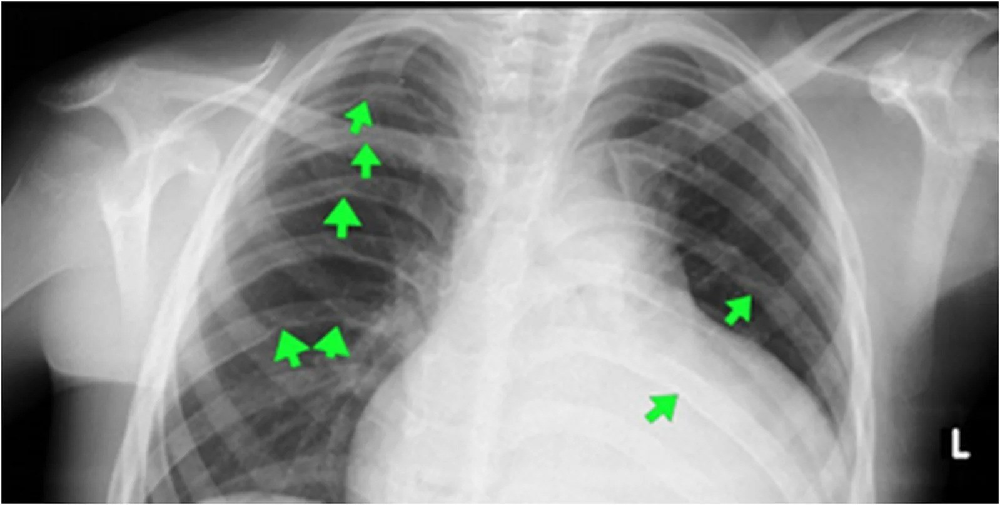
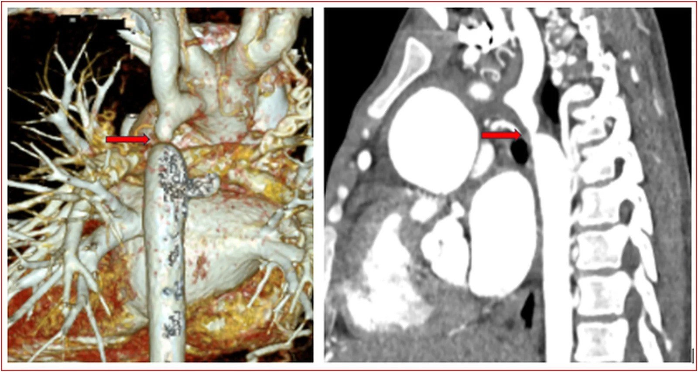
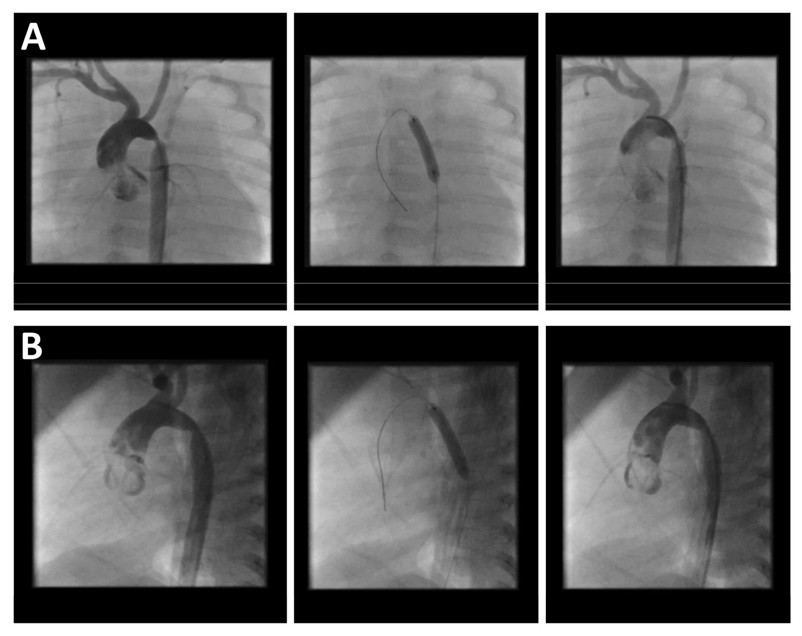
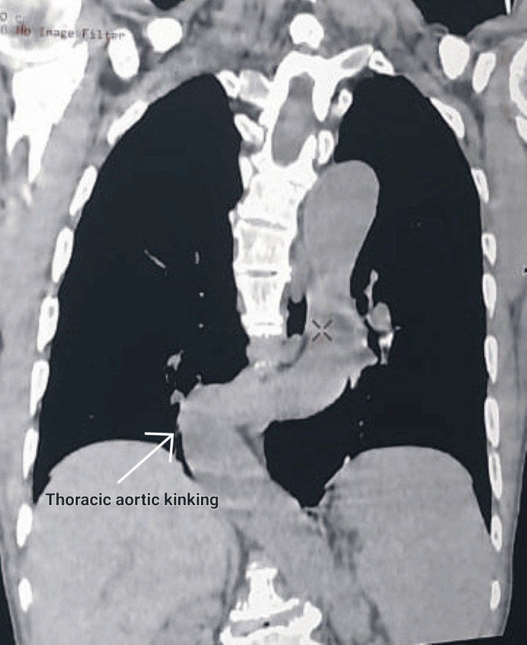

6116 — Hẹp eo động mạch chủ ở trẻ: dấu "3" trên phim ngực, khuyết sườn, chênh huyết áp tay–chân
Tags: pattern:hep-dong-mach pattern:tuong-hoan-bang-he pattern:phi-dai-that-trai pattern:chênh-huyet-ap-tay-chan pattern:khuyet-xuong-suon vung:dong-mach-chu vung:eo-dong-mach-chu vung:trung-that vung:long-nguc protocol:CTA-ECG-gating protocol:MRI-4D-flow protocol:sieu-am-tim protocol:thong-tim score:gradient-20mmHg
Mức chắc chắn (certainty): tổng hợp y văn (literature synthesis) — ghép ca nam 16 tuổi nhập viện vì nhồi máu não, tình cờ phát hiện hẹp eo ĐMC chưa chẩn đoán (Oxford Med Case Reports 2026, PMC13430965), ca người lớn 67 tuổi gập góc ĐMC giả hẹp eo (pseudocoarctation) (Cureus 2026, PMC13471715), đoàn hệ 33 nhũ nhi nong bóng vì hẹp lại sau mổ (J Cardiovasc Dev Dis 2026, PMC13607833), tổng quan chẩn đoán–điều trị hẹp eo (Diagnostics 2023, PMC10340190), tổng quan can thiệp qua da & tỷ lệ can thiệp lại (J Clin Med 2023, PMC10707478), tổng quan hình ảnh đa phương thức (J Clin Med 2026, PMC12898374) và gộp 5 nghiên cứu/442 bệnh nhân về phình động mạch nội sọ (JACC Adv 2023, PMC11198084).
Câu hỏi thực hành: nam 16 tuổi vào viện vì yếu nửa người phải đột ngột; huyết áp tay 150/100 mmHg nhưng chân 80/50 mmHg, mất mạch bẹn hai bên. Phim ngực có khuyết bờ dưới xương sườn 4–7 bên phải; CTA có hẹp khu trú nặng ĐMC xuống ngay sau động mạch dưới đòn trái kèm mạng bàng hệ dày đặc. Câu hỏi: vì sao trẻ bị nhồi máu não lại là hẹp eo ĐMC? khuyết sườn hình thành thế nào và vì sao hiếm gặp ở nhũ nhi? khi nào được nong bóng, khi nào phải đặt stent, khi nào mổ? Bài chốt bốn việc: (1) chênh huyết áp tay–chân tâm thu > 20 mmHg là dấu lâm sàng bắt buộc phải đo ở MỌI trẻ tăng huyết áp; (2) chẩn đoán xác định bằng hình ảnh (siêu âm → CTA/CMR) + gradient, không dựa vào một con số; (3) can thiệp khi có tăng huyết áp/phi đại thất trái/gradient ≥ 20 mmHg, chọn nong bóng ở nhũ nhi và stent ở trẻ ≥ 10 kg; (4) sau can thiệp vẫn phải theo dõi suốt đời vì tăng huyết áp tồn lưu 25–62% và hẹp lại 30–59%. Nối 6117 – Tăng huyết áp do mạch máu thận, 6113 – Huyết khối động mạch chủ sơ sinh sau UAC, 850 – Loạn sản cơ xơ (FMD) toàn thân ở trẻ.
1. Tổng quan bệnh học – cơ chế hình ảnh: tại sao hẹp một chỗ lại gây khuyết xương sườn
- Định nghĩa – dịch tễ: hẹp eo động mạch chủ (coarctation of the aorta, CoA) là hẹp bẩm sinh của động mạch chủ ngực, điển hình là một mảng/một đai khu trú ở eo (isthmus), ngay sau nguyên ủy động mạch dưới đòn trái — nơi ống động mạch bám vào. CoA chiếm 5–8% các dị tật tim bẩm sinh, tỉ lệ mắc 4/10.000 trẻ sinh sống (Diagnostics 2023, PMC10340190; J Clin Med 2023, PMC10707478).
- TẠI SAO hẹp xuất hiện đúng ở eo: thuyết ống động mạch (ductal theory) — tổ chức ống động mạch lấn vào thành ĐMC. Trong 45 mẫu mổ, tổ chức ống động mạch chiếm ~1/2 chu vi đoạn hẹp, so với < 1/3 ở ĐMC bình thường; mô học có dày nội mạc, đứt gãy mảnh xơ chun, hoại tử cystic lớp áo giữa. Khi ống động mạch co lại sau sinh, chính dải tổ chức đó kéo eo hẹp thêm — nên thể nặng sụp tuần hoàn đúng lúc ống đóng (ngày 2–10 sau sinh) (PMC10340190).
- TẠI SAO hẹp nhỏ lại gây chênh áp lớn: theo Poiseuille, sức cản tỉ lệ nghịch với lũy thừa 4 của bán kính — giảm một nửa bán kính làm sức cản tăng khoảng 16 lần. Vì vậy một "eo" vài mm đủ tạo gradient tâm thu 20–100 mmHg.
- Cạm bẫy vật lý quan trọng nhất: gradient đo được phụ thuộc độ giãn của hệ động mạch (compliance), không chỉ độ hẹp. Ở người có compliance thấp (tăng huyết áp mạn, người lớn), gradient đo được thấp hơn mức hẹp thật — nên định nghĩa "hẹp có ý nghĩa = gradient ≥ 20 mmHg" có thể đánh giá thấp bệnh (PMC10340190).
- TẠI SAO có tuần hoàn bàng hệ: chênh áp trên–dưới chỗ hẹp mở các đường nối động mạch liên sườn (intercostal), động mạch vú trong (internal thoracic), động mạch cùng vai, động mạch thượng vị — máu từ dưới đòn trái/ĐMC lên đi ngược chiều xuống ĐMC xuống. Đây là lý do chi dưới vẫn tưới máu dù hẹp nặng, và cũng là lý do gradient có thể "giả thấp" khi bàng hệ rất phát triển.
- TẠI SAO khuyết xương sườn (rib notching): động mạch liên sườn phì đại, ngoằn ngoèo chạy dọc bờ dưới xương sườn; mạch đập lâu ngày bào mòn (pressure erosion) bờ dưới xương sườn → khuyết hình bán nguyệt, hay gặp sườn 4–8, thường hai bên nhưng một bên (phải) cũng đủ để nghĩ chẩn đoán (ca 16 tuổi: sườn 4–7 phải). Vì phải mất nhiều tháng–nhiều năm mới bào mòn được xương, khuyết sườn hiếm gặp ở nhũ nhi và trẻ nhỏ — thiếu dấu hiệu này KHÔNG loại trừ CoA (suy luận từ cơ chế; J Clin Med 2026, PMC12898374).
- TẠI SAO có "dấu 3" (figure-of-three sign) hoặc dấu "E": trên phim ngực thẳng, bờ trái trung thất có ba bậc: quai ĐMC giãn phía trên → eo hẹp lõm vào → giãn sau hẹp (post-stenotic dilatation) phình ra phía dưới. Ba bậc đó vẽ thành chữ "3" (hoặc chữ "E" nếu nhìn như bị bào khoét). Kèm theo là hai đường viền ĐMC xuống (double contour) do đoạn trước và sau hẹp giãn (PMC12898374).
- TẠI SAO tim trái phì đại: tăng hậu tải mạn → phì đại đồng tâm (concentric hypertrophy); theo Laplace, áp lực thành tỉ lệ với áp lực trong lòng × bán kính, nên thành dày lên để giữ áp lực thành bình thường — nhưng giãn dần + xơ hóa cuối cùng dẫn tới suy tim và loạn nhịp. Hệ quả mạch máu não: phình động mạch nội sọ gặp 3,8% (gộp 5 nghiên cứu/442 bệnh nhân), và tăng huyết áp là yếu tố nguy cơ duy nhất có ý nghĩa (OR 3,1; 95% CI 1,1–8,2; p = 0,03); nhồi máu não có thể là biểu hiện đầu tiên (ca 16 tuổi) (JACC Adv 2023, PMC11198084; PMC13430965).
- Ngưỡng định lượng phải thuộc (dùng ngay tại giường):
- Chênh huyết áp tay–chân tâm thu > 20 mmHg (đo đúng băng quấn, đủ 4 chi, cùng lúc hoặc tuần tự nhanh) → nghi CoA.
- Gradient đỉnh–đỉnh ≥ 20 mmHg trên thông tim = hẹp có ý nghĩa huyết động (ESC); gradient trung bình trên Doppler liên tục ≥ 22 mmHg là ngưỡng tương ứng.
- Chỉ số hẹp eo (coarctation index) = đường kính chỗ hẹp nhất / đường kính ĐMC tại cơ hoành: < 0,6 = hẹp nặng trên CTA/CMR.
- Tỉ lệ đường kính eo / ĐMC lên < 0,7 trên siêu âm tim từ hõm ức.
- Vận tốc đỉnh qua chỗ hẹp > 2 m/s; dòng tâm trương kéo dài ("diastolic tail") > 1 m/s; phổ ĐMC bụng lên sóng chậm > 50 ms và < 55 cm/s.
- Tự nhiên không can thiệp: loạt 200 bệnh nhân của Maude Abbott cho tử vong 50% trước 30 tuổi (vỡ ĐMC, viêm nội tâm mạc, suy tim) (PMC10340190).
- Sau sửa vẫn không "khỏi": tăng huyết áp tồn lưu 25–62%, hẹp lại 30–59%, mổ lại ~50% đến thập kỷ thứ 5, chỉ 66% sống tới 70 tuổi (PMC10340190).

Bệnh nhân nam 16 tuổi nhập viện vì nhồi máu não: khuyết bờ dưới xương sườn 4–7 bên phải (mũi tên xanh) do động mạch liên sườn phì đại bào mòn xương, kèm tỉ lệ tim/ngực tăng. Đây là dấu hiệu "miễn phí" trên phim ngực — nhưng chỉ xuất hiện khi bàng hệ đã phát triển đủ lâu. Nguồn: Oxford Medical Case Reports 2026 (PMC13430965), CC BY 4.0, nguyên bản.
Cùng bệnh nhân: dựng hình 3D (trái) và mặt phẳng cong theo trục mạch (phải) cho thấy hẹp khu trú nặng ĐMC xuống ngay sau nguyên ủy động mạch dưới đòn trái (mũi tên đỏ), với chùm mạch bàng hệ dày đặc quanh đoạn hẹp. Chính mạng bàng hệ này giải thích vì sao bệnh nhân chỉ có chênh áp 70 mmHg thay vì sụp tuần hoàn, và vì sao bệnh có thể "im lặng" tới tuổi vị thành niên. Nguồn: Oxford Medical Case Reports 2026 (PMC13430965), CC BY 4.0, nguyên bản.2. Mẫu hình + chẩn đoán phân biệt theo tuổi và theo vị trí (gamut)
- Gamut theo tuổi (quyết định cách trình bày):
- Sơ sinh (0–28 ngày): thể tới hạn (critical CoA) — ống động mạch đóng → sốc, thở nhanh, vô niệu, toan chuyển hóa, mất mạch bẹn; phim ngực thường KHÔNG có khuyết sườn; phải giữ ống động mạch bằng prostaglandin E1 trước khi can thiệp.
- Nhũ nhi – trẻ nhỏ: kém bú, chậm tăng cân, thở nhanh, tim to; khuyết sườn còn hiếm.
- Trẻ lớn – vị thành niên: tăng huyết áp, đau đầu, chảy máu cam, đau cách hồi chi dưới, hẹp eo phát hiện tình cờ — đây là nhóm có đủ dấu hiệu X-quang kinh điển (khuyết sườn, dấu 3).
- Người lớn: biến chứng của tăng huyết áp lâu năm (nhồi máu não, phình ĐMC, bóc tách, suy tim), hoặc hẹp lại sau mổ.
- Gamut theo vị trí tổn thương:
- Eo/juxtaductal (thể hay gặp nhất, ~"đa số"): hẹp khu trú ngay sau dưới đòn trái.
- Trước ống (preductal): thường kèm giảm sản quai ĐMC hoặc tổn thương trái phức tạp → chi dưới tím, ống động mạch phải mở.
- Hẹp ống dài (tubular hypoplasia): hẹp lan dọc quai/ĐMC xuống — không đặt stent được, phải mổ.
- ĐMC bụng (hội chứng ĐMC giữa, mid-aortic syndrome): hẹp ĐMC bụng ± động mạch tạng/thận → tăng huyết áp + đau bụng + cách hồi; nghĩ loạn sản cơ xơ (FMD), Takayasu, NF1 (850).
- Gamut hình ảnh "hẹp/không thấy rõ ĐMC xuống" trên phim ngực hoặc CTA — 7 câu hỏi theo thứ tự:
- Có gradient/huyết áp chênh không? Không chênh + không bàng hệ → giả hẹp eo (kinking/pseudocoarctation), không can thiệp.
- Hẹp khu trú hay đoạn dài? Đoạn dài → giảm sản quai, phải mổ.
- ĐMC có bị đứt đoạn thật không? (interrupted aortic arch) — thường trẻ sơ sinh nặng, không có dòng liên tục trên CTA.
- Có khuyết thuốc trong lòng (huyết khối) không? → "CoA giả" do huyết khối sau catheter động mạch rốn (6113).
- Thành mạch dày, ngấm thuốc, hẹp nhiều đoạn? → viêm mạch (Takayasu), hẹp do xơ sau xạ.
- Hẹp do chèn ép từ ngoài? khối trung thất, màng ngăn, phình/quai giả.
- Đã mổ/can thiệp chưa? → hẹp lại (recoarctation) tại miệng nối hoặc trong stent.
- Mẫu hình kinh điển cần nhớ: trẻ lớn + tăng huyết áp + chênh áp tay–chân > 20 mmHg + mạch bẹn yếu/mất + khuyết sườn + dấu 3 → CoA. Nhưng mẫu hình "không điển hình" (như ca 16 tuổi: nhồi máu não, khuyết sườn một bên) vẫn là CoA — bệnh không đọc phim, bệnh đọc bệnh nhân.
3. Bảng so sánh phân biệt (ma trận đối chiếu)
| Thực thể (entity) | Hình ảnh điển hình | Chốt vào (rule-in) | Chốt loại (rule-out) | Gợi ý xác nhận |
|---|---|---|---|---|
| Hẹp eo thật (true CoA) | Hẹp khu trú ngay sau dưới đòn trái; dấu 3; khuyết sườn 4–8; bàng hệ liên sườn–vú trong; giãn sau hẹp | Chênh huyết áp tay–chân > 20 mmHg + gradient ≥ 20 mmHg + hẹp khu trú có bàng hệ | Không chênh áp, không bàng hệ, lòng mạch đủ rộng → không phải CoA | Siêu âm từ hõm ức (tỉ lệ eo/ĐMC lên < 0,7) → CTA/CMR (chỉ số hẹp < 0,6) |
| Giả hẹp eo (aortic kinking / pseudocoarctation) | Gập góc (kinking) ở eo, lòng mạch không hẹp, KHÔNG bàng hệ, không khuyết sườn; trung thất trên giãn | Gập góc + lòng mạch nguyên + huyết áp 4 chi bằng nhau + không bàng hệ | Có gradient + bàng hệ + khuyết sườn → CoA thật | CTA/CMR + đo huyết áp 4 chi; theo dõi định kỳ (nguy cơ phình/bóc tách) |
| Giảm sản quai ĐMC (arch hypoplasia) | Quai nhỏ đều theo chiều dài, hẹp đoạn dài, thường kèm CoA | Đường kính quai < Z −2 theo tuổi trên toàn đoạn | Hẹp khu trú một điểm, quai bình thường → CoA đơn thuần | Đo Z-score từng đoạn quai trên CTA/CMR; quyết định mổ (không stent) |
| Đứt đoạn ĐMC (interrupted aortic arch) | Mất hoàn toàn dòng liên tục giữa hai đoạn ĐMC; sơ sinh sốc khi ống đóng | Không có dòng nối liền trên CTA/CMR | Có dòng đi qua chỗ hẹp (dù nhỏ) → CoA | CTA/CMR + siêu âm; phẫu thuật cấp cứu |
| "CoA giả" do huyết khối sau catheter động mạch rốn | Khuyết thuốc trong lòng ĐMC bụng/ngực, có tiền sử UAC, chi lạnh, vô niệu | Khuyết thuốc + tiền sử UAC + mất mạch | Không có khuyết thuốc, hẹp do thành mạch → CoA | Siêu âm Doppler + CTA; xem 6113 |
| Hẹp ĐMC bụng / viêm mạch (Takayasu, FMD) | Hẹp nhiều đoạn, thành dày ngấm thuốc, ± phình, tổn thương động mạch thận | Nhiều ổ hẹp + thành mạch dày + tổn thương tạng/thận | Một ổ hẹp đơn độc ở eo → CoA | CTA toàn thân, MRA, xét nghiệm viêm; xem 850, 6117 |
| Hẹp lại sau mổ/can thiệp (recoarctation) | Hẹp tại miệng nối hoặc trong stent, gradient tăng lại | Gradient tăng ≥ 20 mmHg tại chỗ đã sửa + hẹp mới trên hình ảnh | Hình ảnh cũ không đổi, gradient ổn định → không hẹp lại | Siêu âm Doppler + CTA (kernel sắc để giảm blooming); nong bóng lại |
- Không tạo ảnh ghép: 3 ảnh của bài thuộc 3 bệnh nhân khác nhau, 3 bối cảnh khác nhau (nhồi máu não ở trẻ 16 tuổi; nhũ nhi 2 tháng nong bóng; người lớn 67 tuổi giả hẹp eo) — ghép cạnh nhau dễ khiến người đọc tưởng cùng một ca.
4. Protocol chụp + thuật toán can thiệp
- Siêu âm tim là đầu tay (mọi trẻ nghi CoA): từ hõm ức (suprasternal notch) đo quai và eo, tính tỉ lệ eo/ĐMC lên (< 0,7 = nghi hẹp)**; Doppler liên tục qua chỗ hẹp (**PSV > 2 m/s, gradient > 20 mmHg) và dòng tâm trương kéo dài > 1 m/s; từ mỏm dưới sườn đo thời gian lên sóng > 50 ms và vận tốc < 55 cm/s ở ĐMC bụng; đánh giá van ĐMC hai lá (BAV — gặp 25–85% ca CoA), phì đại thất trái, chức năng thất. Hạn chế: cửa sổ kém, phụ thuộc người làm, bàng hệ làm sai lệch gradient (PMC12898374).
- CTA ngực có ECG-gating — khi cần giải phẫu chính xác/chuẩn bị can thiệp: lát ≤ 0,625 mm, gated cho gốc ĐMC và van, cản quang 1–1,5 mL/kg ở 4–6 mL/s, phủ từ các nhánh trên quai tới cơ hoành; dựng đường trục (centreline) + mặt phẳng cong + 3D. Đo chỉ số hẹp eo (< 0,6 = nặng), bản đồ bàng hệ, vôi hóa chu vi nặng (chống chỉ định nong bóng thường vì nguy cơ vỡ ĐMC → chọn stent phủ hoặc mổ), và vùng neo (landing zone) nếu định stent. Liều hiệu dụng một chữ số mSv — phải tối ưu ALARA vì trẻ sẽ chụp nhiều lần trong đời (PMC12898374).
- CMR (+ 4D flow) — chuẩn vàng không bức xạ: cho thể tích, EF, khối cơ thất trái, dòng chảy và gradient ước tính, đánh giá phình/bóc tách và hình dạng quai; ưu tiên ở trẻ cần theo dõi suốt đời khi hợp tác được (thường ≥ 8 tuổi không cần gây mê). Hình dạng quai "gothic" (góc gấp, tỉ lệ cao/rộng tăng) tương quan với tăng huyết áp lúc nghỉ và khi gắng sức dù không còn hẹp — đây là lý do hẹp eo là bệnh toàn thân của động mạch, không chỉ một chỗ hẹp (PMC10340190).
- Thông tim: đo gradient đỉnh–đỉnh ≥ 20 mmHg = hẹp có ý nghĩa; can thiệp luôn trong cùng buổi nếu đủ chỉ định.
- Chỉ định can thiệp (người lớn/trẻ lớn): tăng huyết áp + chênh áp tay–chân > 20 mmHg, hoặc gradient xâm lấn ≥ 20 mmHg (trung bình Doppler ≥ 22 mmHg), hoặc có triệu chứng (phì đại thất trái, suy tim, đau cách hồi) = chỉ định class I. Bàng hệ nhiều kèm giảm tưới máu chi dưới dù gradient thấp = class II (PMC12898374).
- Chọn dụng cụ theo cân nặng/tuổi:
- Nhũ nhi < 1 tuổi / < 10 kg: nong bóng (balloon angioplasty) — vì stent cần sheath lớn. Loạt 68 nhũ nhi 3–12 tháng nong bóng CoA nguyên phát: thành công sớm 88% (gradient < 20 mmHg), 81% không phải can thiệp lại sau 10 năm (PMC10340190).
- Trẻ > 10 kg / người lớn: stent ưu thế vì kết quả huyết động tốt hơn, ít phình/bóc tách/tái hẹp hơn nong bóng. Nhưng đọc kỹ dữ liệu muộn: thử nghiệm COAST/COAST II với stent CP cho can thiệp lại 21%, phình 6,3%, gãy stent 24,4% ở 48–60 tháng — và chỉ 16% bệnh nhân có chụp mặt cắt nên tỉ lệ phình có thể bị đánh giá thấp (PMC10340190).
- Hẹp đoạn dài, giảm sản quai, kèm bệnh van/ĐMC lên cần mổ, hoặc vôi hóa chu vi nặng: phẫu thuật (nối tận–tận / mở rộng quai). Tử vong 30 ngày trong loạt hiện đại 0,54%; biến chứng: tổn thương thần kinh thanh quản quặt ngược, chèn ép phế quản, hẹp lại sớm; vá patch không còn dùng vì tỉ lệ phình ĐMC cao (PMC10340190).
- Hiệu quả nong bóng ở hẹp lại (đoàn hệ 33 nhũ nhi, mổ trong 3 tháng đầu đời, nong trong năm đầu): tuổi mổ trung vị 21 ngày, tuổi nong 77 ngày; gradient đỉnh 40,0 → 21,0 mmHg (p < 0,001); gradient trung bình 13,9 → 6,7 mmHg (p = 0,02); đường kính chỗ hẹp 3,2 → 4,1 mm (p < 0,001); Z-score −4,2 → −2,7 (p < 0,001); huyết áp tâm thu tay phải 111,8 → 88,2 mmHg (p < 0,001); 7% còn tăng huyết áp; biến chứng 12%; can thiệp lại 39,4%; có bệnh tim bẩm sinh kèm theo làm tăng nguy cơ can thiệp lại (OR 4,51); gradient lúc theo dõi 27,4 ± 10,2 (1 năm), 24,6 ± 8,3 (2 năm), 32,8 ± 18,8 (5 năm), 35,4 ± 23,2 mmHg (7 năm) (PMC13607833).
- Thuật toán xử trí:
flowchart TD
A[Nghi hep eo DMC: chenh HA tay-chan - 20 mmHg] --> B[Sieu am tim: gradient, ti le eo/DMC len]
B --> C{Co gradient 20 mmHg hoac tang huyet ap?}
C -->|Khong| D[Theo doi: HA 4 chi + sieu am moi 1-2 nam]
C -->|Co| E[CTA hoac CMR: chi so hep, bang he, vai hoa, landing zone]
E --> F{Chieu dai hep va giai phau quai?}
F -->|Hep khu tru - 10 kg| G[Nong bong]
F -->|Hep khu tru - 10 kg| H[Stent phu]
F -->|Doan dai hoac giam san quai| I[Phau thuat noi tan-tan hoac mo rong quai]
G --> J[Theo doi: HA, gradient, sieu am tai kham]
H --> J
I --> J
J --> K{Tai hep gradient - 20 mmHg?}
K -->|Co| G
K -->|Khong| L[Theo doi suot doi: HA 24 gio, CMR/CTA moi 3-5 nam]
- Theo dõi sau can thiệp (ghi vào giấy ra viện): huyết áp 4 chi mỗi lần khám + holter huyết áp 24 giờ hằng năm; siêu âm tim 6–12 tháng/lần tới khi ổn định, sau đó CMR/CTA mỗi 3–5 năm để tìm hẹp lại, phình giả, gãy stent; tầm soát phình động mạch nội sọ còn tranh luận — AHA/ACC 2018 khuyến cáo, ESC 2020 không khuyến cáo; gộp dữ liệu cho 3,8% nên giá trị tầm soát thường quy thấp, nhưng nên chụp mạch não khi có triệu chứng hoặc tăng huyết áp khó kiểm soát (PMC11198084).

*Bé 2 tháng tuổi hẹp lại 1 tháng sau mổ: (A) mặt phẳng thẳng và (B) nghiêng, mỗi hàng gồm trước (trái) – bóng nong (giữa) – sau (phải); đường kính chỗ hẹp tăng rõ sau nong. Trong đoàn hệ 33 nhũ nhi, cách này đưa đường kính 3,2 → 4,1 mm và Z-score −4,2 → −2,7, nhưng 39,4% phải can thiệp lại. Nguồn: J Cardiovasc Dev Dis 2026 (PMC13607833), CC BY 4.0, nguyên bản.*5. Biến thể bình thường và cạm bẫy
- Giả hẹp eo (pseudocoarctation/kinking) — cạm bẫy số 1: gập góc ĐMC ở eo trông như hẹp nhưng lòng mạch không hẹp, không bàng hệ, huyết áp 4 chi bằng nhau, không khuyết sườn. Ca 67 tuổi trong bài: phim ngực giãn trung thất trên + đám mờ cạnh tim phải, CTA có gập góc rõ ở eo nhưng lòng mạch nguyên vẹn → không can thiệp, chỉ theo dõi vì có thể phình/bóc tách về sau. Đặt stent vào một "giả hẹp eo" là can thiệp iatrogenic (PMC13471715).
- Đo huyết áp sai là bỏ sót bệnh: phải đo cả 4 chi, băng quấn đúng kích cỡ (băng nhỏ → trị số cao giả ở tay), và đo đồng thời nếu nghi ngờ. Ở bệnh nhân suy tim/giảm cung lượng, chênh áp có thể mất dù hẹp nặng.
- Khuyết sườn không chỉ của CoA: u sợi thần kinh (NF1), dị dạng động–tĩnh mạch thành ngực, tắc động mạch dưới đòn, shunt Blalock–Taussig cũ, giãn bạch mạch; và ngược lại CoA ở nhũ nhi thường KHÔNG có khuyết sườn → dấu hiệu vắng mặt không loại trừ.
- Khuyết sườn một bên: ca 16 tuổi chỉ có khuyết sườn phải — do bàng hệ chủ yếu qua liên sườn phải; không được vì "chỉ một bên" mà bỏ qua.
- "CoA giả" do huyết khối sau catheter động mạch rốn: trẻ sơ sinh chi lạnh, vô niệu, mất mạch bẹn + khuyết thuốc trong lòng ĐMC — đây là huyết khối, không phải hẹp bẩm sinh; xử trí kháng đông/tiêu sợi huyết, không phải nong bóng (6113).
- Gradient thấp giả: compliance thấp (người lớn tăng huyết áp) hoặc bàng hệ rất phát triển làm gradient đo được thấp hơn độ hẹp thật → phải phối hợp hình ảnh + triệu chứng + phì đại thất trái, không dùng một con số để loại trừ.
- "Đã sửa xong" ≠ khỏi bệnh: tăng huyết áp tồn lưu 25–62%, hẹp lại 30–59%, mổ lại ~50% đến thập kỷ thứ 5, chỉ 66% sống tới 70 tuổi; quai "gothic" gây tăng huyết áp dù không còn hẹp → theo dõi suốt đời, không xuất viện không hẹn.
- Blooming do stent trên CT: dùng kernel sắc và reconstruction mỏng để đánh giá áp stent/ hẹp trong stent; với stent phủ còn phải tìm phình giả ở đầu stent.
- Van ĐMC hai lá (BAV) 25–85%: luôn đo gốc ĐMC/ĐMC lên trên cùng lần chụp — bỏ sót phình gốc ĐMC là bỏ sót nguyên nhân tử vong chính về sau.
6. Tự lượng giá — Blind Quiz ngay trên trang tĩnh
Ca 1 — Nam 16 tuổi, yếu nửa người phải đột ngột, huyết áp tay 150/100 và chân 80/50 mmHg. Nhìn hai ảnh, mô tả trước khi mở đáp án.
- Gợi ý lâm sàng (clinical context): 16 tuổi, đau đầu từ nhỏ, mất mạch bẹn hai bên, thổi tâm thu ở vùng van ĐMC và dưới xương đòn trái; não: nhồi máu lớn vùng động mạch não giữa trái, GCS 11/15.
- Câu hỏi: (1) Dấu hiệu trên phim ngực và trên CTA? (2) Vì sao huyết áp chênh tới 70 mmHg mà bệnh nhân vẫn sống tới 16 tuổi? (3) Ba chẩn đoán phân biệt cần loại trừ? (4) Liên hệ giữa hẹp eo và nhồi máu não?
Bấm để hiện đáp án (findings + chẩn đoán)
- Dấu hiệu (findings): phim ngực — khuyết bờ dưới xương sườn 4–7 bên phải (mũi tên xanh), tỉ lệ tim/ngực tăng; CTA — hẹp khu trú nặng ĐMC xuống ngay sau động mạch dưới đòn trái (mũi tên đỏ) + mạng bàng hệ dày đặc quanh đoạn hẹp; siêu âm tim có van ĐMC hai lá hẹp vừa + phì đại thất trái đồng tâm.
- Chẩn đoán (diagnosis): hẹp eo động mạch chủ (CoA) thể khu trú, chẩn đoán muộn ở tuổi vị thành niên, biến chứng nhồi máu não. Vì sao sống được tới 16 tuổi: bàng hệ liên sườn–vú trong phát triển đủ để tưới máu chi dưới, đồng thời bào mòn bờ sườn tạo khuyết sườn.
- Phân biệt: giả hẹp eo (kinking) — không gradient, không bàng hệ; hẹp ĐMC bụng/FMD–Takayasu — nhiều ổ, thành dày; "CoA giả" do huyết khối UAC — khuyết thuốc trong lòng, tiền sử catheter rốn.
- Vì sao nhồi máu não: tăng huyết áp mạn + phình động mạch nội sọ (3,8% bệnh nhân CoA; tăng huyết áp OR 3,1) + thay đổi huyết động não. Nguồn gốc nhồi máu ở ca này chưa xác định chắc chắn vì không chụp mạch não và không xét nghiệm trombophilia — đây là hạn chế của ca, không phải bằng chứng cơ chế.
- Xử trí: điều trị đột quỵ + kiểm soát huyết áp, sau ổn định chuyển mổ sửa hẹp eo.
- Nguồn: Oxford Medical Case Reports 2026 (PMC13430965), CC BY 4.0.
Ca 2 — Bé 2 tháng tuổi, đã mổ hẹp eo lúc 3 tuần tuổi, nay gradient tăng lại. Nhìn ảnh chụp mạch, mô tả trước.
- Gợi ý lâm sàng: 2 tháng tuổi, mổ nối tận–tận lúc 21 ngày, siêu âm gradient tâm thu ≥ 20 mmHg ở miệng nối.
- Câu hỏi: (1) Mỗi hàng ảnh gồm những gì, thứ tự ra sao? (2) Đây là hẹp eo nguyên phát hay hẹp lại? (3) Sau nong, kỳ vọng con số nào, và tỉ lệ phải can thiệp lại?
Bấm để hiện đáp án (findings + chẩn đoán)
- Findings: mỗi hàng trước – bóng nang (giữa) – sau nong; (A) mặt phẳng thẳng, (B) nghiêng. Trước nong có eo hẹp tại miệng nối, sau nong đường kính tăng rõ.
- Chẩn đoán: hẹp lại sau mổ (recoarctation) — chỉ định nong bóng vì trẻ < 10 kg.
- Con số kỳ vọng (đoàn hệ 33 nhũ nhi): gradient đỉnh 40,0 → 21,0 mmHg, đường kính 3,2 → 4,1 mm, Z-score −4,2 → −2,7, huyết áp tay phải 111,8 → 88,2 mmHg, 7% còn tăng huyết áp, biến chứng 12%, can thiệp lại 39,4% — và có bệnh tim bẩm sinh kèm theo thì OR can thiệp lại 4,51.
- Bài học: nong bóng an toàn và lặp lại được, nhưng không phải "một lần là xong" — phải hẹn theo dõi gradient.
- Nguồn: J Cardiovasc Dev Dis 2026 (PMC13607833), CC BY 4.0.
Ca 3 — Nam 67 tuổi, ho ra máu + phân đen, huyết áp 4 chi bằng nhau. CTA dựng mặt phẳng cong:

- Gợi ý lâm sàng: 67 tuổi, nhập viện vì xuất huyết tiêu hóa, tình cờ thấy bất thường ĐMC; mạch ngoại vi đều, huyết áp 125/75 mmHg ở cả 4 chi, không thổi tim.
- Câu hỏi: (1) Mô tả bất thường ở eo ĐMC. (2) Vì sao KHÔNG đây là hẹp eo thật? (3) Có cần can thiệp không, và theo dõi gì?
Bấm để hiện đáp án (findings + chẩn đoán)
- Findings: gập góc rõ (marked angulation) ĐMC xuống tại eo, lòng mạch được bảo tồn, không hẹp có ý nghĩa, không tuần hoàn bàng hệ.
- Chẩn đoán: giả hẹp eo (pseudocoarctation / thoracic aortic kinking). Chốt loại CoA bằng 3 dấu: không chênh huyết áp 4 chi, không bàng hệ, không khuyết sườn.
- Xử trí: không can thiệp; theo dõi định kỳ vì có thể phình, bóc tách, chèn ép trung thất; kèm van ĐMC hai lá ở một số ca nên cần đánh giá toàn bộ tim.
- Bài học: "hình giống hẹp" ≠ "hẹp có ý nghĩa huyết động" — đo huyết áp 4 chi là xét nghiệm rẻ nhất và quyết định nhất.
- Nguồn: Cureus 2026 (PMC13471715), CC BY 4.0. Ảnh có sẵn chú thích của tác giả ("Thoracic aortic kinking"), giữ nguyên.
Bài liên quan chéo
- 6117 – Tăng huyết áp do mạch máu thận ở trẻ sau huyết khối sơ sinh — hàng DDx bắt buộc của tăng huyết áp ở trẻ; ngưỡng huyết áp AAP 2017 và Doppler động mạch thận.
- 6113 – Huyết khối động mạch chủ ở sơ sinh sau UAC — nguồn gốc "CoA giả" và theo dõi tăng huyết áp sau huyết khối.
- 850 – Loạn sản cơ xơ (FMD) toàn thân ở trẻ — hẹp nhiều ổ, kể cả hội chứng ĐMC giữa.
- 6111 – Huyết khối tĩnh mạch thận ở trẻ sơ sinh — cùng nhóm biến chứng mạch máu sơ sinh, cùng đích theo dõi huyết áp.
- 010 – Giải phẫu ngực cắt lớp & biến thể — mốc giải phẫu quai/eo và biến thể nhánh.
- 600 – Tổng quan Nhi khoa
Không dùng để chẩn đoán độc lập khi chưa có người hướng dẫn.